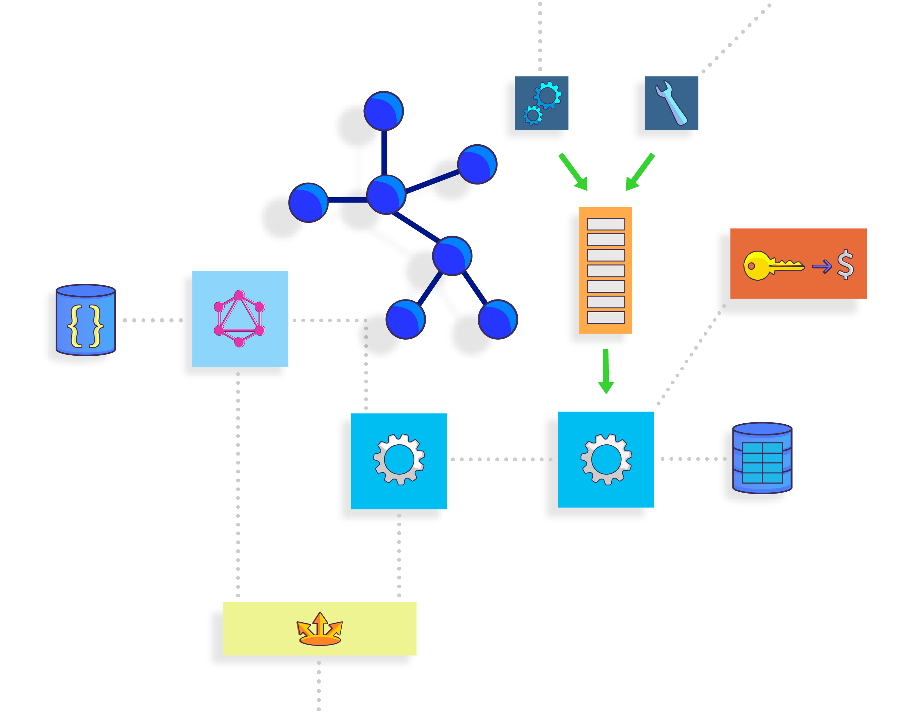

Build robust and modular microservices

Develop RESTful and GraphQL API's with Spring for powerful,
multithreaded servers or opt for an asynchronous, event-driven
approach with Node.js. Leverage caching, messaging, and both SQL &
NoSQL solutions for each services' persistence needs. Employ a stateless app
architecture to improve horizontal scaling.